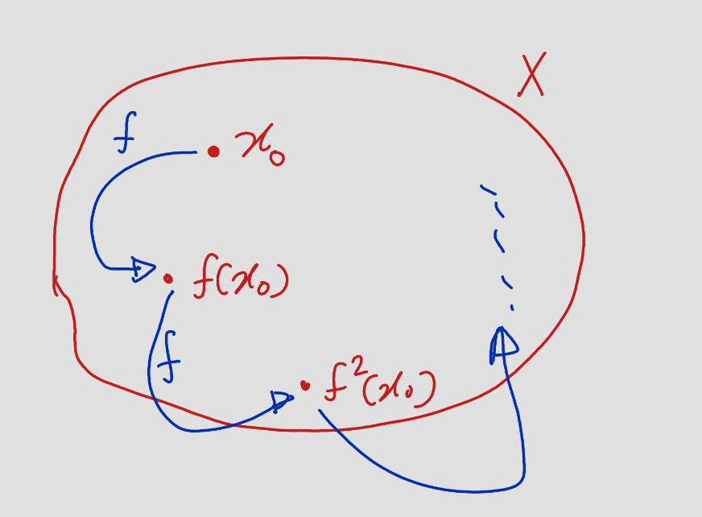
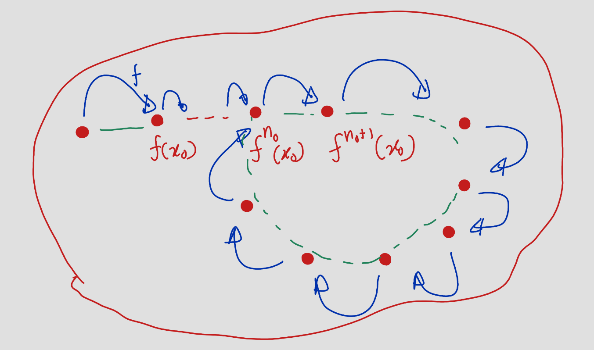
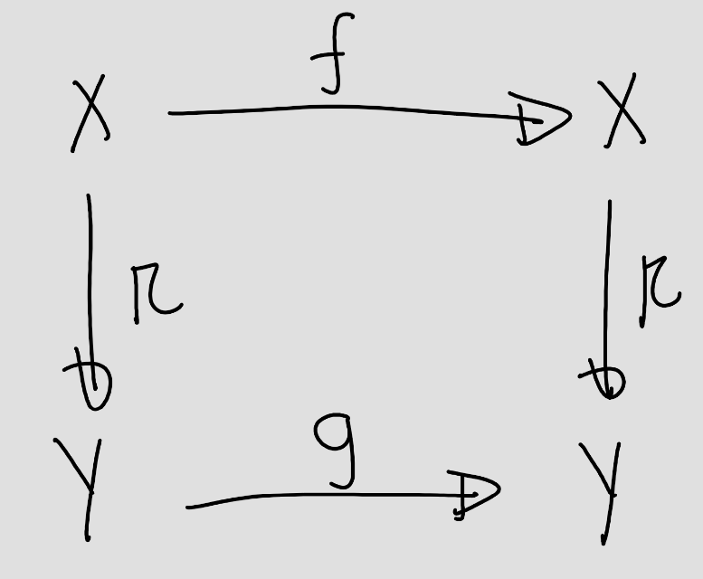
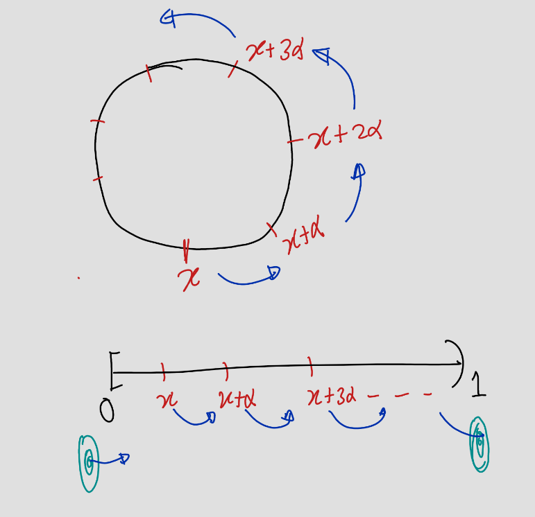
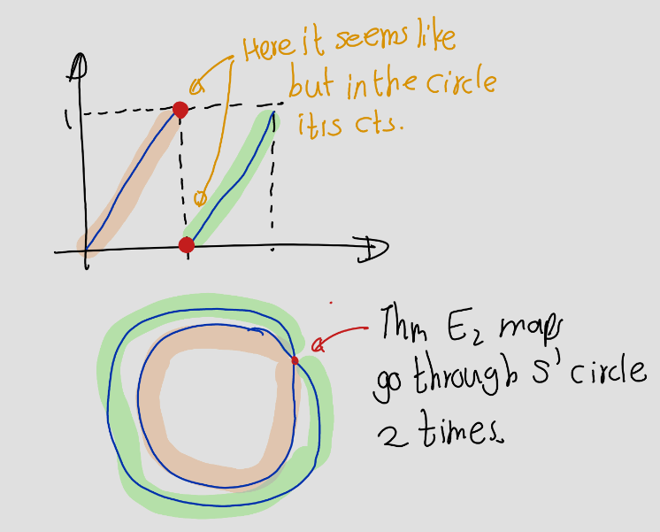
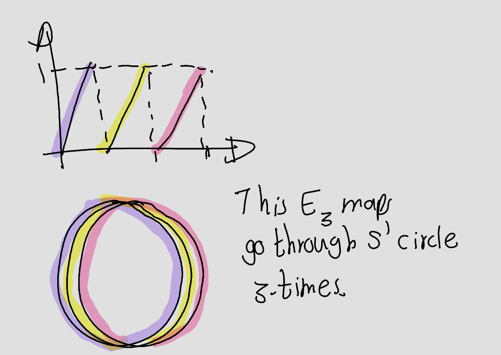
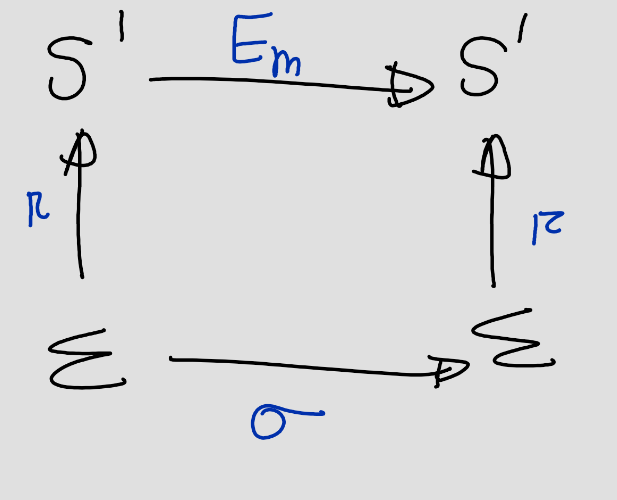
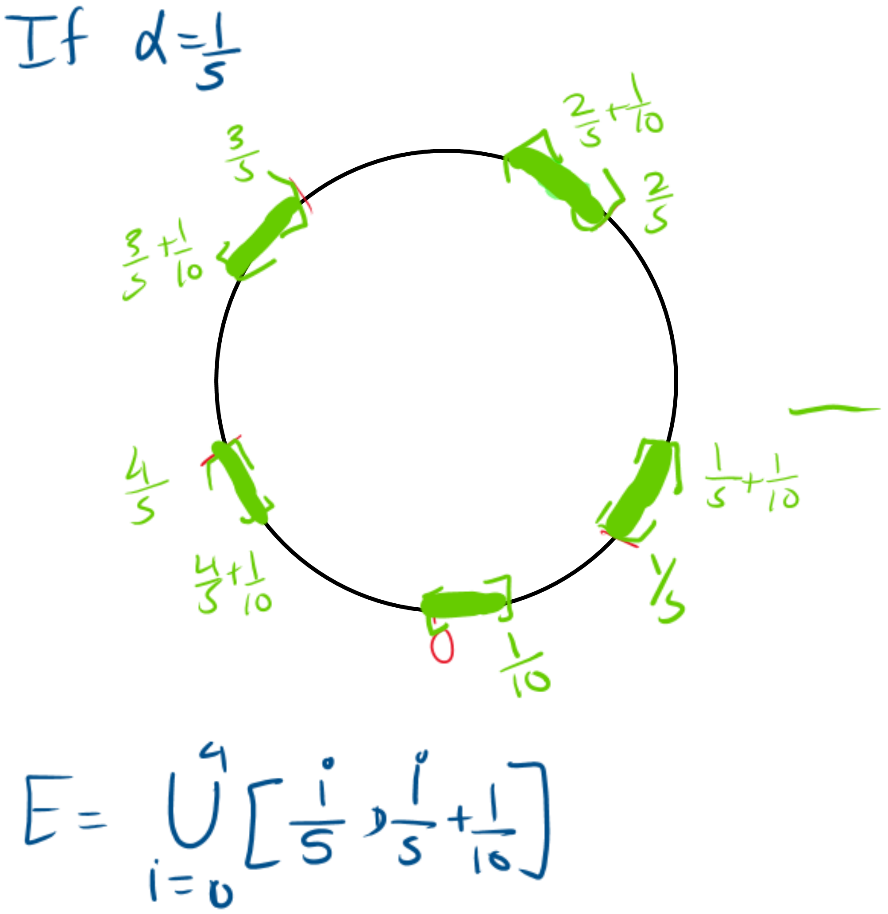
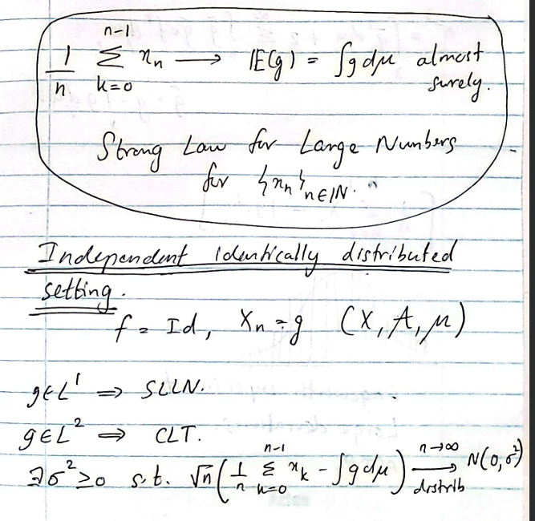

Chapter 7 Stochastic and Dynamics
7.1 Discrete Dynamical Systems
Example 7.1
- 3-body problem (Lyapunov and Poincaré)
- Kolmogorov Systems
Definition 7.1 A discrete dynamical system consists of a non-empty set \(X\) and a map \(f: X \to X\).
Notation: \((X,f)\)
Proposition 7.1
- If \(f\) is invertible, then \((\{f^n\}, \circ)\) is a group.
- If \(f\) is non-invertible, then \((\{f^n\}, \circ)\) is a semi-group.
7.2 A Class of Problems
The problem of finding “good” estimates for parameters, features, and states of dynamical systems arises in many applications.
Consider the process \((X_n, Y_n)\), where: - \(X_n\) is the current state. - \(Y_n\) is the observation.
| \(X_n\) / \(Y_n\) | Noise | No-Noise |
|---|---|---|
| Noise | State space model | Markov model |
| No-Noise | \(f: X \to X\), \(X_n = f^n(x_0)\), \(Y_n=g(X_n)+\bar{\varepsilon}\), where \(\bar{\varepsilon} \sim N(0,1)\) | Ergodic model, \(f: X \to X\), \(X_n = f^n(x_0)\), \(Y_n=g(X_n)\) |
Definition 7.2 (Orbit)
If \(f\) is invertible, then \[ \text{positive orbit of } x := O_f^+ = \{f^n(x) : n = 0, 1, 2, \dots\} \] \[ \text{negative orbit of } x := O_f^- = \{f^{-n}(x) : n = 0, 1, 2, \dots\} \] Then \[ \text{Orbit of } x = O_f := O_f^+ \cup O_f^-. \]
If \(f\) is non-invertible, then \[ \text{orbit of } x := O_f = O_f^+ = \{f^n(x) : n = 0, 1, 2, \dots\}. \]

Definition 7.3
- The orbit of a periodic point is called a periodic orbit.
- If the period is 1, then that point is called a fixed point.
- A point \(x\) is called eventually periodic if there exists \(n_0\) such that \(f^{n_0}(x)\) is periodic.
In other words, there exists \(\bar{N}\) such that \(f^{\bar{N}}(f^{n_0}(x)) = f^{n_0}(x)\).

Exercise 7.1 Show that if \(f\) is invertible, then all eventually periodic points are periodic.
Proof. Suppose that \(f\) is invertible. Let \(x\) be an eventually periodic point. Then there exist \(n_0 \geq 0\) and \(p > 0\) such that: \[ f^p(f^{n_0}(x)) = f^{n_0+p}(x) = f^{n_0}(x). \]
Since \(f\) is invertible, \[ \begin{align} f^{-n_0}(f^{n_0+p}(x)) &= f^{-n_0}(f^{n_0}(x))\\ f^{-n_0+n_0+p}(x) &= f^{-n_0+n_0}(x)\\ f^{p}(x) &= x. \end{align} \]
Fact: \(A \subseteq f^{-n}(f^n(A))\)
Definition 7.4 (Invariance) We say that \(A\) is \(f\)-invariant if \(f^{-1}(A) = A\),
here \(f^{-1}(A) =\) preimage of \(A\) under the map \(f\), i.e., \(\{x \in X \mid f(x) \in A\}\).
Exercise 7.2 Assume that \(f\) is invertible. Can you think of a non-trivial invariant set \((X,f)\)? Here, trivial invariant sets are the empty set and the whole set.
If there exists \(x_0\), \(O_f(x_0) \neq X\), then \(O_f(x_0)\) is a non-trivial \(f\)-invariant set.
Definition 7.5 Let \((X, f), (Y, g)\) be two discrete dynamical systems. \(\pi: Y \to X\) is called a semi-conjugacy if \(f \circ \pi = \pi \circ g\) and \(\pi\) is surjective.

Definition 7.6 If \(\pi\) is invertible then \(\pi\) is called conjugacy.
7.3 Examples
Now let’s see some examples.
Example 7.2 (Circle Rotaions) \[ R_\alpha = x + \alpha \pmod{1} = x + \alpha - \lfloor x + \alpha \rfloor \] This removes the integer part.

Let \[d(x,y)=\min\{|x-y|,1-|x-y|\}\]. Then \((S^1,d)\) is a complete metric space.
Proof. Later Try it.
Exercise 7.3 If \(\alpha\in \mathbb{Q}\) all orbits are periodic.
Proof. If \(\alpha\in \mathbb{Q}\) then \(\alpha+\frac{p}{q}\) for some \(p,q\in \mathbb{Z}\).
If \(x_0 = x\), consider the iterates: \[ x_1 = R_\alpha(x_0) = x_0 + \frac{p}{q} \pmod{1}, \] \[ x_2 = R_\alpha(x_1) = x_0 + 2\frac{p}{q} \pmod{1}, \] and so on, producing the sequence \(x_n = x_0 + n\frac{p}{q} \pmod{1}\).
Beacuse, \(\alpha = \frac{p}{q}\) is rational, the sequence \(x_n\) will eventually return to its starting point after at most \(q\) steps. This follows from the periodicity of \(R_\alpha(x)\), as the fractional parts of \(n \frac{p}{q} \mod 1\) take on at most \(q\) distinct values.
Thus, the map \(R_\alpha(x)\) is periodic if \(\alpha\) is rational.
Exercise 7.4 If \(\alpha\in \mathbb{R}\setminus \mathbb{Q}\) then \(\overline{O^+_{R_\alpha}(x)}=S^1\).
Proof. Fix any choice of \(x \in S^1\) and \(\varepsilon > 0\).
By the pigeonhole principle, there exist integers \(0 \leq l < k \leq \lceil 1 / \varepsilon \rceil\) such that: \[ d(T^k(x), T^l(x)) < \varepsilon, \] where \(d\) is the natural metric on \(S^1\).
Since applying \(T^l\) preserves distances, this implies: \[ d(x, T^{k-l}(x)) < \varepsilon. \]
Denote \(m = k - l\). Clearly, the orbit: \[ \{T^n(x) \mid n \in \mathbb{Z}\} \] is contained within: \[ \{x, T^m(x), T^{2m}(x), \ldots\}. \]
Furthermore, this latter set is \(\varepsilon\)-dense in \(S^1\), as \(\alpha \in \mathbb{R} \setminus \mathbb{Q}\) ensures that the orbit does not repeat and fills the circle densely.
Thus, the closure of the forward orbit is: \[ \overline{O^+_{R_\alpha}(x)} = S^1. \]
Exercise 7.5 Find the all closed subsets of \(R_\alpha\), where \(\alpha\) is irrational.
Example 7.3 Let \(m\in \mathbb{N}, m>1\).Define, \[ \begin{align} E_m:S^1 & \to S^1\\ x& \mapsto mx \pmod{1} \end{align} \]
If \(m=2\),

If \(m=3\),

Unlike \(R_\alpha\) is “expanding”.
Definition 7.7 An exapnding map \(f\) on a metric space \((X,d)\) is ampa that expandss distance between nearby points. i.e.: \[ d(x,y)<\varepsilon \implies d(f(x),f(y))>\lambda d(x,y) \text{ for some \lambda >1} \]
Claim: \(E_m\) is preserves Lebesgue measure on \(S^1\). i.e: \[ \text{Leb}(E^{-1}_m(A))=\text{Leb}(A) \text{ for all measureble set } A. \]
Exercise 7.6 Let \(E_{10}(x)=10x\pmod{1}\).
- Show that \(E_10\). has periodic orbits of all periodic.
- Show that there exist \(O^+_{10}(x)=S^1\).
- Show that the set of periodic points \(E_10\) are dense \(S^1\).
Now fix \(m>1\). Let
\[ \begin{align} \Sigma &= \{0, 1, \ldots, m-1\}^\mathbb{N} \\ &= \{(x_k)_{k=1}^\infty \mid x_k \in \{0, 1, \ldots, m-1\} \text{ for all } k \in \mathbb{N}\} \\ &= \text{the set of sequences with coefficients in } \{0, 1, \ldots, m-1\}. \end{align} \]
Define \[\ \begin{align} \sigma: \Sigma &\to \Sigma\\ (x_1,x_2,...) &\mapsto (x_2,x_3,...) \end{align} \]

\[ \Pi ((x_k)_{k=1}^\infty)=\sum_{k=1}^\infty \frac{x_k}{m^k} \]
Exercise 7.7 Verify this conjugacy.
The natural topology on \(\{0, 1, \ldots, m-1\}\) is the discrete topology. Basic open sets in the discrete topology consist of individual letters; thus, the open cylinders of the product topology on \(\{0, 1, \ldots, m-1\}^{\mathbb{N}}\) are \[ C_l^k = \{x \in \{0, 1, \ldots, m-1\}^{\mathbb{N}} : x_k = l\}. \]
Cylinder that generate product topology on \(\Sigma\).The intersections of a finite number of open cylinders are the cylinder sets,
\[ \begin{aligned} C^{k_1,\ldots,k_r}_{l_1,\ldots,l_r} &= C_{k_1}^{l_1} \cap C_{k_2}^{l_2} \cap \cdots \cap C_{k_r}^{l_r} \\ &= \{(x_k)_{k=0}^\infty \mid x_{k_1} = l_1, \ldots, x_{k_r} = l_r\}. \end{aligned} \]
Define metric \[ d(x_n,y_n)=2^{-l}, \text{ here } l=\min\{n\mid y_n\neq x_n\} \] Then \(B_(x_n,2^{-l})=C^{k_1,\ldots,k_r}_{l_1,\ldots,l_r}\)
Exercise 7.8 Verify.
Example 7.4 (logistic family) \[ \begin{aligned} q_\mu:[0,1] & \to [0,1]\\ x & \mapsto \mu x (1-x) \end{aligned} \]
Theorem 7.1 (Strong Law of Large Numbers(SLLN)) Let \(X\) be a real-valued random variable, and let \(X_1, X_2, X_3, \ldots\) be an infinite sequence of independent and identically distributed copies of \(X\). Let
\[ \overline{X}_n := \frac{1}{n}(X_1 + \ldots + X_n) \]
be the empirical averages of this sequence. A fundamental theorem in probability theory is the law of large numbers. Suppose that the first moment of \(X\) is finite (\(\mathbb{E}[X]<\infty\)). Then \(\overline{X}_n\) converges almost surely to \(\mathbb{E}[X]\), thus
\[ \mathbb{P}\left(\lim_{n \to \infty} \overline{X}_n = \mathbb{E}[X]\right) = 1. \]
Example 7.5 (Coin Flips) Consider a fair coin, where the probability of getting heads (\(H\)) is \(p = 0.5\) and the probability of getting tails (\(T\)) is \(1 - p = 0.5\). Let \(X_i\) represent the outcome of the \(i\)-th coin flip, where: \[ X_i = \begin{cases} 1 & \text{if the outcome is heads (H)}, \\ 0 & \text{if the outcome is tails (T)}. \end{cases} \]
The expected value of each \(X_i\) is:
\[ \mathbb{E}[X_i] = 1 \cdot 0.5 + 0 \cdot 0.5 = 0.5. \]
Let \(\overline{X}_n\) represent the sample mean after \(n\) flips, i.e.,
\[ \overline{X}_n = \frac{1}{n} \sum_{i=1}^{n} X_i. \]
By the Strong Law of Large Numbers (SLLN), as the number of flips \(n\) increases, the sample mean \(\overline{X}_n\) will converge almost surely to the expected value \(\mathbb{E}[X_i] = 0.5\). This means:
\[ \mathbb{P}\left( \lim_{n \to \infty} \overline{X}_n = \frac{1}{2} \right) = 1. \]
7.4 Measure Theory A crash Course.
Definition 7.8 (sigma-algebra) Consider a set \(X\). A \(\sigma\)-algebra \(\mathcal{A}\) of subsets of \(X\) is a collection \(\mathcal{A}\) of subsets of \(X\) (\(\mathcal{A} \subseteq \mathcal{P}(X)=\)Power set of \(X\))satisfying the following conditions:
- \(\emptyset \in \mathcal{A}\)
- If \(A \in \mathcal{A}\), then its complement \(A^c\) is also in \(\mathcal{A}\)
- If \(A_1, A_2, \dots\) is a countable collection of sets in \(\mathcal{A}\), then their union \(\bigcup_{n=1}^{\infty} A_n\) is also in \(\mathcal{A}\)
Definition 7.9 (measure) Let \(X\) be a set and \(\Sigma\) a \(\sigma\)-algebra over \(X\). A set function \(\mu\) from \(\Sigma\) to the extended real number line is called a measure if the following conditions hold:
For all \(E \in \Sigma\), \(\mu(E) \geq 0\).
\(\mu(\varnothing) = 0\).
For all countable collections \(\{E_k\}_{k=1}^{\infty}\) of pairwise disjoint sets in \(\Sigma\), \[ \mu\left( \bigcup_{k=1}^{\infty} E_k \right) = \sum_{k=1}^{\infty} \mu(E_k). \]
A set of measure zero is called a null set.
A set whose complement is null said to be full-measure.
A \(\sigma\)-algbera is complete (relative to \(\mu\)) if all subsets of \(\mu-\)null sets.
Definition 7.10 (Measure Space) A triple \({\displaystyle (X,\Sigma ,\mu )}\) is called a measure space.
Definition 7.11 (sigma-finite) A measure space \((X,\mathcal{A} ,\mu )\) is called if there exists a countable collection of sets \(\{A_i\}\) such that \[ X = \bigcup_{i=1}^{\infty} A_i \quad \text{and} \quad \mu(A_i) < \infty \text{ for all } i. \]
We assume that \({\displaystyle (X,\mathcal{A} ,\mu )}\) is complete and \(\sigma-\)finite.
Definition 7.12 (Probability Measure) A measure space \((X,\mathcal{A} ,\mu )\) is called a probability measure if \(\mu(X) = 1\).
Definition 7.13 Let \(T: (X, \mathcal{A}, \mu) \to (X, \mathcal{B}, \gamma)\) be a map between two measurable spaces.
Measurable map:
\(T\) is called a measurable map if for every \(B \in \mathcal{B}\), the preimage \(T^{-1}(B) \in \mathcal{A}\).Non-singular map:
A measurable map \(T\) is called non-singular if for every \(B \in \mathcal{B}\), \(\gamma(B) = 0 \implies \mu(T^{-1}(B)) = 0\).Property modulo 1:
A property is said to hold:- modulo 1 in \(X\),
- \(\mu\)-almost everywhere, or
- essentially true,
if it holds on a subset of full measure in \(X\), i.e., it fails only on a set of measure zero.
- modulo 1 in \(X\),
Equality of measurable functions:
Two measurable functions \(f, g: X \to \mathbb{C}\) are considered equal if \(f(x) = g(x)\) \(\mu\)-almost everywhere (a.e.), meaning they differ only on a set of measure zero.The \(L^p_\mu(X)\) space:
For \(p > 0\), the space \(L^p_\mu(X)\) consists of equivalence classes of measurable functions \(g: X \to \mathbb{C}\) such that:
\[ \int_X |g(x)|^p \, d\mu(x) < \infty. \]
From now we look at non-singular (measurable) discrete dynamical systems.
Definition 7.14 Let \(f: (X, \mathcal{A}, \mu) \to (X, \mathcal{A}, \mu)\) be a measurable map.
Measure-preserving map:
\(f\) is said to be measure-preserving if:
\[ \mu(f^{-1}(A)) = \mu(A), \quad \forall A \in \mathcal{A}. \]\(f\)-invariant measure:
If \(f\) is measure-preserving, then we say that the measure \(\mu\) is \(f\)-invariant.
Theorem 7.2 Let \(X\) be a compact, metrizable topological space, and let \(F: X \to X\) be a continuous map. Then \(F\) admits an invariant Borel probability measure.
Remark. Compact is essntail. - Consider \(f(x)=x+1, x\in \mathbb{R}\).
Let \(X=\mathbb{R}\)
7.5 Write this agian.
Example 7.6
- \((S^1,R_\alpha)\)
- \((S^1,E_m)\)
- \(([0,1],q_\mu)\)
- \((\Sigma,\sigma)\)
Proof. ( Proof of Krylov-Bogoliubov Theorem )
Let \(x \in X\). Define the probability measure \(\mu_n\) as:
\[
\mu_n = \frac{1}{n} \sum_{k=0}^{n-1} \delta_{f^k(x)},
\]
where \(\delta_x\) is the Dirac measure defined by:
\[
\delta_x(A): \mathcal{A} \to \mathbb{R}, \quad \delta_x(A) =
\begin{cases}
1, & \text{if } x \in A, \\
0, & \text{if } x \notin A.
\end{cases}
\]
We can verify that \(\mu_n\) is a probability measure. For any \(n\),
\[
\mu_n(X) = \frac{1}{n} \sum_{k=0}^{n-1} \delta_{f^k(x)}(X) = \frac{1}{n} \sum_{k=0}^{n-1} 1 = \frac{1}{n} \cdot n = 1.
\]
Now, let \(\mathcal{C}_0\) denote the set of continuous functions on \(X\) and \(g\in C_0\).
\[ \begin{align} \int_X g d\mu_n & = \int_X gd\left(\frac{1}{n}\sum_{k=0}^{n-1} \delta_f^k(x)\right)\\ & = \frac{1}{n}\sum_{k=0}^{n-1} \int_X g d\left(\delta_f^k(x)\right)\\ & = \frac{1}{n}\sum_{k=0}^{n-1} \int_X g \left(f^k(x)\right)\\ |\int_X g d\mu_n | & \leq \frac{1}{n}\sum_{k=0}^{n-1} ||g||_\infty=1||g||_\infty\\ |\int_X g d\mu_n | & \leq 1 \end{align} \]
Recall Banach–Alaoglu theorem:
The closed unit ball of the dual space of a normed vector space is compact in the weak topology.
7.6 Write agian
Theorem 7.3 (Poincaré recurrence theorem) Let \(f: X \to X\) be a measure-preserving map on a probability space \((X, \mathcal{A}, \mu)\), where \(\mu(X) = 1\). If \(A \in \mathcal{A}\) satisfies \(\mu(A) > 0\), then for \(\mu\)-almost every \(x \in A\), there exists \(n \in \mathbb{N}\) such that \(f^n(x) \in A\).
Corollary 7.1 Consequently, for \(\mu\)-almost everywhere, \(x\in A\), there are infinitely many \(k\) such that \(f^k(x)\in A\).
Remark.
- \[ \text{Recuurance of an orbit} \neq \text{dense orbit}\] Example: \(R_\alpha, \alpha \in \mathbb{Q}\) then no dense orbit exists.
- If \(\mu\) is not finite then this therom is not true.
ExampleConsider \(f(x)=x+1\), Lebegue measure is preserved but it goes to infinity \(f^n\). - There are some applications of this therom
Proof. Let \(A\subseteq X\) is measuarable and \(B:=\{x\in A\mid f^n(x)\in A, \text{ for all } n \in \mathbb{N}\}\), B contains all points never returns \(A\). \[ \begin{align} B&=\{x\in A\mid f^n(x)\in A, \text{ for all } n \in \mathbb{N}\}\\ &= A\setminus \cup_{n=1}^\infty f^{-n}(A). \end{align} \] Since \(f\) is preseves \(\mu\), \[\mu (f^{-k}(B))=\mu(B) ~~\forall k\]
Claim: \(f^{-m}\cap f^{-n} \neq \emptyset\).
Without loss of generality assume that \(m>n\).
Assume the contray. Then there exists x f^{-n} f^{-m}.
\[
\begin{align}
f^m(x) \in B & \subseteq A\\
f^n(x) \in B & \subseteq A\\
f^{m-n}(f^n(x))=f^m \in B & \subseteq A
\end{align}
\]
Now we found a point that returns back to \(A\). This is contraidict the choice of \(B\).
Therefore, (f{-m}f{-n} $.
\[ 1=\mu(X)\geq \mu (\cup_{k=0}^\infty f^{-k}(B)) = (\cup_{k=0}^\infty \mu(f^{-k}(B)) = (\cup_{k=0}^\infty \mu(B))\\ \] Therefore, \(\mu(B)=0\)
7.7 Egodicity and Mixing
Boltzmann Ergodicity Hypothesis
For certain invariant (finite) measures \(\mu\), many functions \(g : X \to \mathbb{R}\), and many initial states \(x \in X\), the time average
\[
\frac{1}{N} \sum_{k=0}^{N-1} g(f^k(x))
\]
converges to the space average
\[
\frac{1}{\mu(X)} \int g \, d\mu,
\]
assuming \(\int g \, d\mu < \infty\).
Remark. Let \(g = \mathbb{1}_{B_\epsilon(x)}\), the indicator function of the ball \(B_\epsilon(x)\). Then
\[
\frac{1}{N} \sum_{k=0}^{N-1} \mathbb{1}_{B_\epsilon(x)}(f^k(x)) \to \frac{\mu(B_\epsilon(x))}{\mu(X)}
\]
as \(N \to \infty\).
Definition 7.15 (Ergodic) A measure preserving tranformation \((X,\mathcal{A},\mu,f)\) is claled ergodic if every invareinet set \(E\) is null (\(\mu(E)=0\)) or full ((E)^c=0)
Remark. Irredusability If \(f:X\to X\) is ergodic \(\nexists E\) such that \(\mu(E)<1\) and \(E\) is \(f-\)invaraient. So, that is “reasonable” spliting \(f\mid_E\) and \(f\mid_{X\setminus E}\)
Proposition 7.2 \((X,\mathcal{A},\mu ,f\) is an measure preserving trasnformation on complete measure space. Then TAFE. a. \(\mu\) is ergodic b. If \(g:X\to \mathbb{R}\) is mesuarble and \(g \circ f=g\) \(\mu\)-a.e. then \(\exists c \in \mathbb{R}\) such that \(g=c\) \(\mu-\) a.e.
Proof.
\(b \implies a\)
Let \(E\) be \(\mu-\)invarient. Write \(g=\mathbb{1}_E\). Then observe the following \[g\circ f =\mathbb{1}_E \circ f = \mathbb{1}_{f^k(E)}=1_E=g\] This is beacuse, \[ \begin{align} g\circ f (x)&=\mathbb{1}_E(f(x))\\ &=\begin{cases} 1 \text{ if } f(x) \in \\ 0 \text{ if } f(x) \not\in E\\ \end{cases}\\ &=\begin{cases} 1 \text{ if } f(x) \in E\\ 0 \text{ if } f(x) \not\in E\\ \end{cases}\\ &=\begin{cases} 1 \text{ if } x \in f^{-1}(E)=E\text{ Since $f$-invarinet}\\ 0 \text{ if } x \not\in f^{-1}(E)=E\\ \end{cases}\\ &= \mathbb{1}_E=g \end{align} \] Thus, \(g\) is \(f\)-invareint. Hence, \(g=c \mu-\)a.e. (by the hypothesis) Since \(g\) is getting value 1 and 0. Thus, \(g=0\) or \(g=1\) a.e. Thus, \(\mu(E)=0 or mu(E^c)=0\)\(a \implies b\).
Let \(g=g\circ f \mu-\)a.e. Then \[A_t:=\{x\in X: g(x)>t\} ~\forall t.\] Then, \[\begin{align} f^{-1}(A_t) &= \{x\in X : f(x)\in A_t\}\\ &= \{x\in X : g(f(x))> t\}\\ &= \{x\in X : g(x)> t\} \text{( since $g \circ f= g \mu-$a.e.)}\\ &= A_t \end{align}\] By ergodicity, \(\mu(A_t) = 0\) or \(\mu(A_t^c) = 0\).
Let \(C:=\inf\{t:\mu(A_t)=0\}\).
Claim: \(g=C ~\mu-\)a.e
- If \(t \geq C\), then \(\mu(A_t) = 0\) (by definition of \(C\)).
- If \(t < C\), then \(\mu(A_t) > 0\) (since \(t\) is not in the set where \(\mu(A_t) = 0\)). Then \(\mu(A_t^c) = 0\). Thus \(g(x)\leq t~\mu\)-a.e.
7.8 Complete proof
Definition 7.16 (strong mixing) Aproblalabalaity preseveing trafomatio \((X,\mathcal{A},\mu,f)\) is called mixing (strong mixing) if for all \(A,B\in \mathcal{A}\), \[\mu(A)\cap f^{-k}(B))\to mu(A)\mu(B)\text{ as } k\to \infty\]
Remark.
- mixing \(\approx\) asympothtic independence
- \[\frac{\mu(A) \cap f^{-k}(B)}{\mu(A)}\to \mu(B)\text{ as } k\to \infty\]
Proposition 7.3 \[\text{Strong Mixing } \implies \text{Ergocity} \]
Proof. Let \(E \in \mathcal{A}\) be \(f-\) invarient. Then, \[\mu(E \cap f^{-k}(E))\to mu(E)\mu(E)\text{ as } k\to \infty.\] Note that \(\mu(E \cap f^{-k}(E))=mu(E \cap E)=\mu(E)\). This implies, \[\mu(E)\to mu(E)\mu(E)\text{ as } k\to \infty\] Thus, \(\mu(E)^2=\mu(E)\implies \mu(E)=0 \text{ or } \mu(E)=1\).
Proposition 7.4 A probability-preserving transformation \((X, \mathcal{A}, \mu, f)\) is strongly mixing if and only if for all \(g, h \in L^2(\mu)\), \[ \int_X h \cdot g \circ f^k \, d\mu \to \int_X h \, d\mu \cdot \int_X g \, d\mu \quad \text{as } k \to \infty. \tag{7.1} \]
Proof. \(\Longleftarrow\)
Assume that (7.1) is true. Let \(A,B\in \mathcal{A}\). Let \(h=\mathbb{1}_A\) and \(g\mathbb{1}_B\). Then observ ethat \(g,h\in L^2(\mu)\).
\[\int h g \circ f^k
=\int_X \mathbb{1}_A \mathbb{1}_B \circ f^k
=\int_X \mathbb{1}_A \mathbb{1}_{f^{-k}(B)}
=\int_X \mathbb{1}_{A\cap f^{-k}(B)}=\mu( A\cap f^{-k}(B))\]
By (7.1),
\[
\int_X h \cdot g \circ f^k \, d\mu \to \int_X h \, d\mu \cdot \int_X g \, d\mu=\mu(A)\mu(B) \quad \text{ as } k \to \infty. \]
Thus,
\[\mu( A\cap f^{-k}(B))=\mu(A)\mu(B)\text{ as } k \to \infty.\]
\(\implies\)
Assume the mixing. By definition, for all \(A, B \in \mathcal{A}\),
\[
\mu(A \cap f^{-k}(B)) \to \mu(A)\mu(B) \quad \text{as } k \to \infty.
\]
In terms of indicator functions, this can be expressed as:
\[
\int_X \mathbb{1}_A \cdot (\mathbb{1}_B \circ f^k) \, d\mu \to \int_X \mathbb{1}_A \, d\mu \cdot \int_X \mathbb{1}_B \, d\mu \quad \text{as } k \to \infty.
\]
Let \(g = \sum_{i=1}^n c_i \mathbb{1}_{B_i}\) and \(h = \sum_{j=1}^m d_j \mathbb{1}_{A_j}\) be simple functions.
Using linearity of the integral, we have:
\[
\int_X h \cdot (g \circ f^k) \, d\mu = \sum_{i=1}^n \sum_{j=1}^m c_i d_j \int_X \mathbb{1}_{A_j} \cdot (\mathbb{1}_{B_i} \circ f^k) \, d\mu.
\]
By the assumption of strong mixing, each term satisfies:
\[
\int_X \mathbb{1}_{A_j} \cdot (\mathbb{1}_{B_i} \circ f^k) \, d\mu \to \int_X \mathbb{1}_{A_j} \, d\mu \cdot \int_X \mathbb{1}_{B_i} \, d\mu.
\]
Substituting this into the sum, we obtain:
\[
\int_X h \cdot (g \circ f^k) \, d\mu \to \left(\sum_{j=1}^m d_j \int_X \mathbb{1}_{A_j} \, d\mu\right) \cdot \left(\sum_{i=1}^n c_i \int_X \mathbb{1}_{B_i} \, d\mu\right).
\]
Simplifying, this becomes:
\[
\int_X h \, d\mu \cdot \int_X g \, d\mu.
\]
7.9 Complete proof
Example 7.7 \(R_\alpha\) with \(\alpha\in \mathbb{Q}\) is non-ergodic
\(\alpha\in \mathbb{Q}\) implies there exist \(p,q\in.\) \[ E:=\bigcup_{i=0}^{q-1} \left[\frac{i}{q}, \frac{i}{q}+\frac{1}{2q}\right] \] Then \(R_\alpha(E)=E.\) Thus, \(E\) is invariant under \(R_\alpha\) For an example, if \(\alpha =\frac{1}{5}\)

Then \[ \text{Leb}(E)=\frac{1}{2q}\cdot q= \frac{1}{2}\\ \text{Leb}(E^c)=\frac{1}{2q}\cdot q= \frac{1}{2} \] Thus, \(\text{Leb}(E)\neq 0\) and \(\text{Leb}(E^c)\neq 0\). Hence this is not ergodic.
Example 7.8 \(R_\alpha\) with \(\alpha\in \mathbb{Q}^c\) is ergodic. Let \(E\subset S^1\) be invareint \(g=\mathbb{1}_E\). Since \(g \in L^2(S^1)\), we can expand it in terms of its Fourier series: \[ g(x) = \sum_{n \in \mathbb{Z}} c_n e^{2\pi i n x}, \] where the Fourier coefficients are: \[ c_n = \int_{S^1} g(x) e^{-2\pi i n x} \, dx. \] Using the invariance \(g(x + \alpha) = g(x)\), substitute into the Fourier series: \[ \sum_{n \in \mathbb{Z}} c_n e^{2\pi i n (x + \alpha)} = \sum_{n \in \mathbb{Z}} c_n e^{2\pi i n x}. \]
This simplifies to: \[ \sum_{n \in \mathbb{Z}} c_n e^{2\pi i n \alpha} e^{2\pi i n x} = \sum_{n \in \mathbb{Z}} c_n e^{2\pi i n x}. \] Equating the Fourier coefficients on both sides gives: \[ c_n e^{2\pi i n \alpha} = c_n, \quad \forall n \in \mathbb{Z}. \]
If \(c_n \neq 0\), this implies: \[ e^{2\pi i n \alpha} = 1. \]
This is equivalent to \(n \alpha \in \mathbb{Z}.\) Since \(\alpha \notin \mathbb{Q}\), \(n \alpha \notin \mathbb{Z}\) for any \(n \neq 0\). Therefore, \(e^{2\pi i n \alpha} \neq 1\) for \(n \neq 0\), which forces \(c_n = 0\) for all \(n \neq 0\).
The only nonzero Fourier coefficient is \(c_0\), so: \[ g(x) = c_0, \quad \text{a constant}. \]
Since \(g(x) = \mathbb{1}_E\), this implies that \(E\) is either the empty set (\(g(x) = 0\)) or the whole circle (\(g(x) = 1\)).
Thus, \(\text{Leb} = 0\) or \(\text{Leb}(E) = 1\), proving that \(R_\alpha\) is ergodic for \(\alpha \in \mathbb{Q}^c\).
7.10 Write again
Exercise 7.9 \((E_2,\text{Leb})\) is strong mixing.
Hint: Use diadic intervls \[\text{Leb}(A \cap E_2^{-k}(B))\to \text{Leb}(A)\text{Leb}(B)\text{ as } k \to \infty.\]
Here \(A:=\left[ \frac{m}{2p}, \frac{m+1}{2p}\right],B:=\left[ \frac{k}{2q}, \frac{k+1}{2q}\right]\)
Another Method: \(\sum=\{0,1\}^N, \sigma (x_1,x_2,...)=(x_2,x_3,...)\)
7.11 The probability point of view
Let \((X,\mathcal{A},\mu,f)\) is probability dynamical system.
- Take \(X\) to be the sample space.
- \(\mathcal{A}\) is the collection of measurable events.
- \(\Pr(w\in E)=\mu(E),~E\in \mathcal{A}\)
- \(g:X\to \mathbb{R}\) is a random variable.
- \(X_n=g\circ f^n\) is stochastic process. \[ \Pr(X_{t_1}\in E_1,X_{t_2}\in E_2,...,X_{t_k}\in E_k)= \mu(\bigcap_{t=1}^k\{w\in X\mid g(f(w)\in E_{t_j}\}) \]
In fact: \(\{X_n\}\) is stationary.
Theorem 7.4 Let (X,,,f } be probability preserving transformation. Suppose \(\mu\) is eragodic then for \(\mu\) almost everywhere \(x \in X\) and \(\forall g \in L^1(\mu)\). \[ \frac{1}{n}\sum_{k=0}^{n-1} g(f^k(x)) \to \int_X g \, d\mu \text{ as } n \to \infty \]

7.12 Central Limit Therom
Let \((X,\mathcal{A},\mu,f)\) is probability preserving transformation.
- \[cor(g,h)=\int h g\circ f^n d\mu - \int h d\mu \int g d\mu~~ \forall g,h \in L^2(\mu)\]
- \[cor(g,h) \to 0 \iff \text{ Strong Mixing}\]
- Finding the rate of mixing (the rate of decay correlance) is a fundamental problem in dynamical system.
- If we do not restrict the set from which we pick \(g,h\) we cannot expect faster decay.
Proposition 7.5 For \(E_2\) (the doubling map) if \(h\in C^1_{[0,1]}\) and \(g \in L^1(\mu)\) then \(\exists\theta \in (0,1)\) such that \[ Cor_n(h,g)\leq C \theta^n ||h||_{C^1}||g||_{L^1(\mu)} \]
Definition 7.17 Let \((\mathcal{F}_n)_{n\in \mathbb{N}}\) be as equnace of non increasing \(\sigma\)-algebra (i.e.: \(\mathcal{F}_n \subseteq \mathcal{F}_{n+1}~ \forall n\)) and \((X_n)\) be a sequance eof random varibles. Then \(X_n\) is called reverse martiangle diffrence if
- \(X_n\) is \(\mathcal{F}_n\) is measurable.
- \(\mathbb{E}(X_{n}\mid \mathcal{F}_{n+1})=0\iff \forall A \in \mathcal{F}_{n+1} ~\int_A X_n d\mu=0\)
- \(\mathbb{E}(X_{n}\mid \mathcal{F}_{n-1})=0~\forall n\geq 1\) and \(\mathbb{X}_0=0\)
Theorem 7.5 Let \((X_n)_{n\geq 1}\) be a stionary, ergodic, direct or reverse martiangle diffrence such that \(\sigma \mathbb{E}(X_0^2)\in (0,\infty)\) and \(\mathbb{E}(X_0)\). Then, \[ \mu \left( \left\{x\in X \mid \frac{1}{\sqrt{n}}\sum_{j=0}^{n-1} X_j(x)\leq z\right\}\right) \to \frac{1}{2\pi\sigma^2}\int_{-\infty}^\infty e^{-\frac{t^2}{2 \sigma^2}} \]